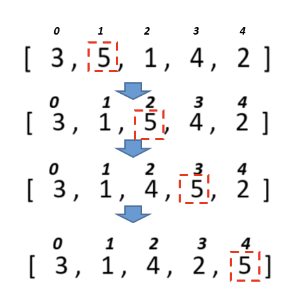

Задача 4. Для розглянутих методів сортування спробувати вивести етапи сортування шляхом виведення відповідних таблиць за зразком. Тобто кожного разу після обміну елементів вивести поточний стан масиву на екран.
